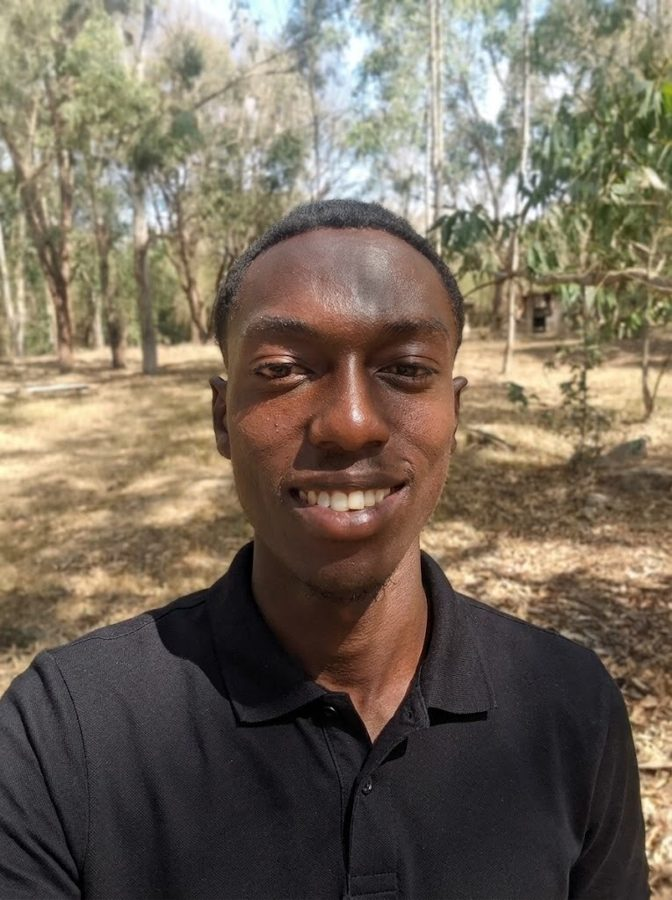

Laboratories and researchers
Help us test capsule survival in hot mix, measure healing, and analyse fumes, leaching and micro/nanoplastics.
Offer lab supportRoad agencies and counties
KURA, KeNHA, KeRRA and Nairobi County: help us plan approvals and a public test section once the truck-yard data is in.
Talk to usFunders and investors
We are raising KES 3,000,000 for lab validation, the Dandora truck-yard pilot and a sorting hub with six jobs.
Fund the pilot See the planMentors
Construction, asphalt production, materials science, business and regulation: your experience could save us years.
Become a mentorAsphalt producers and contractors
Interested in trialling or licensing a waste-based, self-healing binder when it is proven? Let’s talk early.
Register interestDandora groups and waste pickers
Waste-picker groups, youth groups and community organisations: help us design a fair supply chain and hub.
Join us
Leslie Owuor
Share this page with anyone who could help: https://owuorlee.github.io/smartasphalt/